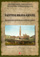

|
(Pioviscola) 0/24 Nato a Castelnuovo Berardenga (SI) il 10 dicembre 1868 (vedi certificati) Morto a Siena il 24 aprile 1928 
1 Palio straordinario.  

CENSIMENTO DI SIENA - anno 1901 - via del Rialto   
Leva: manovale altezza 1,61 - capelli castagni lisci -
occhi grigi - colorito giallo pallido - dentatura sana - cicatrice in
fronte - riformato per deficienza toracica.
 | ||||||||||||||||||||||||||||||||||||||||||||||||||||||||||||||||||||||||||||||||||||||||||||||||||||||||